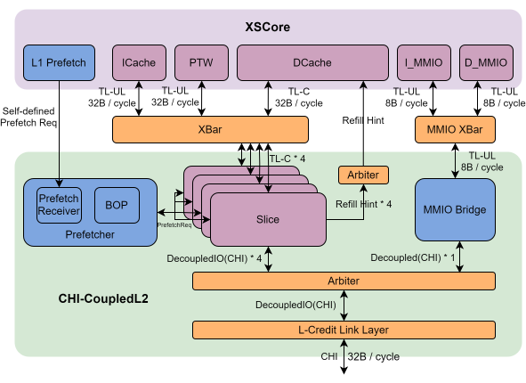
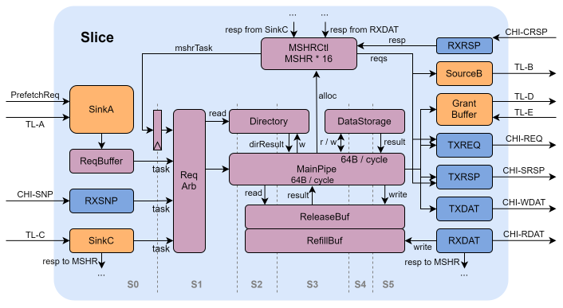

レベル2キャッシュ CoupledL2
サブモジュールリスト
CoupledL2のトップレベルは、（デフォルトで）4つのスライス、MMIOBridge、およびプリフェッチャに分かれています。
プリフェッチャには、L2ローカルプリフェッチャであるBest-Offset Prefetch（BOP）と、DCacheでトレーニングされたがL2にフェッチする必要があるプリフェッチ要求を受信するために使用されるL1 DCacheプリフェッチレシーバが含まれています。
MMIOBridge、またはMMIO要求ブリッジは、TileLinkバスのMMIO要求をCHI要求に変換します。これらとキャッシュ可能なアドレス空間のCHI要求との間で調停を行い、統一されたCHIインターフェースを介して相互接続バスにアクセスします。
CoupledL2の4つのスライスは、下位アドレスビットに基づいて分割され、異なるアドレスを持つ要求またはプリフェッチアドレスは、異なるスライスに分散されます。
各スライスのサブモジュールのリストは次のとおりです。
| サブモジュール | 説明 |
|---|---|
| SinkA | アップストリームTileLinkバスAチャネルコントローラ。 |
| SinkC | アップストリームTileLinkバスCチャネルコントローラ |
| GrantBuffer | アップストリームTileLinkバスD/Eチャネルコントローラ |
| TXREQ | ダウンストリームCHIバスTXREQチャネルコントローラ |
| TXDAT | ダウンストリームCHIバスTXDATチャネルコントローラ |
| TXRSP | ダウンストリームCHIバスTXRSPチャネルコントローラ |
| RXSNP | ダウンストリームCHIバスRXSNPチャネルコントローラ |
| RXDAT | ダウンストリームCHIバスRXDATチャネルコントローラ |
| RXRSP | ダウンストリームCHIバスRXRSPチャネルコントローラ |
| Directory. | ディレクトリ、メタデータ情報を格納するSRAM |
| DataStorage | データSRAM |
| RefillBuffer | リフィルデータレジスタファイル。 |
| ReleaseBuffer | リリースデータレジスタファイル |
| RequestBuffer | Aチャネル要求バッファ |
| RequestArb | 要求アービタ、メインパイプラインステージs0〜s2。 |
| MainPipe | メインパイプラインステージs3〜s5。 |
| MSHRCtl | MSHR（Miss Status Handling Registers）制御モジュール、デフォルトで16個のMSHRエントリを含む |
設計仕様
- 上流のL1Cache / PTWとTileLinkバスプロトコルを使用して相互接続します
- 下流のHN-FとCHIバスプロトコルを使用し、B/C/E.bの3つのCHIバスバージョンをサポートします（デフォルトはE.b）
-
次のCHI読み取りトランザクションをサポートします。
- ReadNoSnp（B/C/E.b）（MMIOおよびUncache要求にのみ使用）
- ReadNotSharedDirty（B/C/E.b）
- ReadUnique（B/C/E.b）
-
次のCHIデータレス・トランザクションをサポートします。
- MakeUnique（B/C/E.b）
- Evict（B/C/E.b）
- CleanShared（B/C/E.b）
- CleanInvalid（B/C/E.b）
- MakeInvalid（B/C/E.b）
-
次のCHI書き込みトランザクションをサポートします。
- WriteNoSnpPtl（B/C/E.b）（MMIOおよびUncache要求にのみ使用）
- WriteBackFull（B/C/E.b）
- WriteCleanFull（B/C/E.b）
- WriteEvictOrEvict（E.b）
-
次のCHIスヌープトランザクションをサポートします。
- SnpOnceFwd（B/C/E.b）
- SnpOnce（B/C/E.b）
- SnpStashUnique（B/C/E.b）
- SnpStashShared（B/C/E.b）
- SnpCleanFwd（B/C/E.b）
- SnpClean（B/C/E.b）
- SnpNotSharedDirtyFwd（B/C/E.b）
- SnpNotSharedDirty（B/C/E.b）
- SnpSharedFwd（B/C/E.b）
- SnpShared（B/C/E.b）
- SnpUniqueFwd（B/C/E.b）
- SnpUnique（B/C/E.b）
- SnpUniqueStash（B/C/E.b）
- SnpCleanShared（B/C/E.b）。
- SnpCleanInvalid（B/C/E.b）
- SnpMakeInvalid（B/C/E.b）
- SnpMakeInvalidStash（B/C/E.b）
- SnpQuery（E.b）
-
1MBの容量、8ウェイセットアソシアティブ構造、下位アドレスビットに基づいて4つのスライスに分割
- キャッシュラインサイズは64B、バスデータ幅は32B、完全なキャッシュライン転送には2ビートのデータ転送が必要
- MESIライクなキャッシュコヒーレンシプロトコルを採用
- DCacheとは厳密な包含ポリシーを、ICache / PTWとは非厳密な包含ポリシーを採用
- ノンブロッキングのメインパイプライン構造を採用
- 最大アクセス並列度は4 × 16（各スライスに16個のMSHRエントリ、合計4スライス）、スライスごとに最大15個のMSHRエントリがL1Cache / PTWアクセスに利用可能
- 同じセット内の要求への並列アクセスをサポート
- L2キャッシュミスのリフィルデータを受信した後に、置き換えウェイを選択して置き換えることをサポート
- メモリアクセス要求とプリフェッチ要求のマージをサポート
- ロード命令の早期ウェイクアップのためのL2リフィルヒント信号の生成をサポート
- BOPプリフェッチャをサポート
- L1によってトレーニングされ、L2にバックフィルされたプリフェッチ要求の処理をサポート
- DRRIP / PLRUなどの置き換えアルゴリズムをサポートし、デフォルトはDRRIP
- キャッシュエイリアスのハードウェア処理をサポート
- MMIO要求処理をサポート。MMIO要求はCoupledL2でTileLinkバスからCHIバスに変換され、4つのスライスからのキャッシュ可能な要求と調停されます。
機能説明
CoupledL2は、XiangshanコアのDCache / ICache / PTWから送信されたTileLinkライトバックおよび置き換え要求を受信し、対応するデータブロックの転送とコヒーレンシ状態の遷移を完了し、オンチップネットワークのRN-Fとして機能して、オンチップ相互接続システムにおけるXiangshanコアのキャッシュコヒーレンシを維持します。
CoupledL2モジュールは、アップストリームのTileLinkチャネルコントローラ（SinkA / SinkC）を介して要求を受信し、それらを内部要求に変換します。要求は、要求調停を介してメインパイプラインに入り、ディレクトリを読み取ってキャッシュブロックの状態を取得し、キャッシュブロックの状態と要求情報に基づいて処理できるかどうかを判断します。
- このレベルのキャッシュが要求を直接処理できる場合、メインパイプラインでデータの読み取りやディレクトリの更新などの操作を続行し、GrantBufferに入ってTileLinkバス応答に変換されます。
- 要求を処理するために他のキャッシュとの対話が必要な場合、MSHRが割り当てられます。MSHRは、必要に応じて上位および下位レベルのキャッシュにサブ要求を送信します。応答を受信し、リリース条件を満たすと、タスクはメインパイプラインにリリースされ、バッファの読み取り、データの読み取り/書き込み、ディレクトリの更新などの操作が行われます。その後、チャネルコントローラモジュールに進み、TileLinkバス応答に変換されます。
要求に必要なすべての操作がMSHRで完了すると、MSHRは解放され、新しい要求の受信を待ちます。
MESIライクなキャッシュコヒーレンシプロトコルを採用
Xiangshanコアのキャッシュサブシステムは、TileLink一貫性ツリーのルールに従います。CoupledL2のキャッシュライン状態には、N（Nothing）、B（Branch）、T（Trunk）、およびTT（Tip）の4つの状態があります。
- N: 無効
- B: 読み取り専用権限
- T: 現在のコアには書き込み権限がありますが、書き込み権限はアップストリームキャッシュにあり、現在のキャッシュレベルは読み取りも書き込みもできません。
- TT: 読み取りおよび書き込み可能。
コヒーレンシツリーは、メモリ、L3、L2、L1の順に下から上に成長し、メモリが読み書き権限を持つルートノードになります。子ノードの権限は、親ノードの権限を超えることはできません。ここで、TTはT権限を持つ最上位の子ノード（T権限ツリーのリーフノードでもある）を表し、このノードの上にはNまたはB権限しか存在しないことを示します。逆に、T権限を持つがTT権限を持たないノードは、その上にT/TT権限ノードが必ず存在することを示します。詳細なルールについては、TileLinkのマニュアルを参照してください。
ディレクトリを使用してキャッシュライン情報を記録
CoupledL2は、ディレクトリベースのインクルーシブキャッシュです（ここでの「ディレクトリ」は、メタデータとタグを含む広義のものです）。メタデータには、状態ビット/ダーティビット/上位レベルのキャッシュクライアントにいるかどうか/上位レベルのエイリアスビット/プリフェッチされたかどうか/プリフェッチソース/アクセスされたかどうかが含まれます。
パイプラインステージs1で、RequestArbはディレクトリへの読み取り要求を開始して、タグアレイでヒットを確認します。ヒットした場合、ヒットしたウェイが選択されます。ミスした場合、置き換えアルゴリズムに基づいて置き換えウェイが選択され、選択されたウェイのメタデータがステージs3のMainPipeに返されます。
ノンブロッキングパイプライン構造を採用
CoupledL2は、メインパイプラインアーキテクチャを採用しています。さまざまなチャネルからの要求は、ディレクトリ操作のためにメインパイプラインに調停されます。要求情報とディレクトリの結果に基づいて、対応する操作が配置されます。
Acquire要求処理フロー
此图に示すように。

スヌープ要求処理フロー
此图に示すように。

リリース要求処理フロー
リリース要求の処理フローは次のとおりです。
- SinkCからL1 DCacheからのリリース要求を受信し、内部要求に変換します。
- s1でリリース要求がパイプラインに入り、ディレクトリを照会します。
- s3でディレクトリ検索結果を取得します（L1 DCacheとL2は厳密な包含関係にあるため、リリースは常にヒットします）。s3はディレクトリを書き込み、ダーティデータがある場合はs3でDataStorageに書き込む必要があります。
- s3はReleaseAck応答を生成し、s3とs5の間のいずれかのステージでパイプラインを終了し、GrantBufferに入り、ReleaseAckをL1に返します。
リフィルデータの受信後に置き換えパスの選択と置き換えを実行
キャッシュが新しい要求を受信したがセットが満杯の場合、従来のロジックによれば、まず置き換えウェイを選択し、それを下位レベルのキャッシュに書き込んで、今後の不足データの補充のためのスペースを確保し、次に新しいデータブロックが下位レベルのキャッシュから補充されるのを待ってから書き込む必要があります。しかし、このアプローチは特定の問題を引き起こす可能性があります。
-
一方で、下位レベルのキャッシュからの補充には、しばしば長いレイテンシ（数十から数千サイクル）が伴います。この期間中、古いデータブロックは追い出されていますが、新しいデータブロックはまだ到着しておらず、キャッシュの場所は事実上空いています。これにより、キャッシュリソースがアイドル状態になり、無駄になり、有効なキャッシュ容量が減少します。
-
他方で、この期間中に上位レベルのキャッシュが置き換えられたデータブロックに再度アクセスしようとすると、データブロックはすでに解放されているため、下位レベルのキャッシュから再度フェッチすることしかできず、アクセスレイテンシが大幅に増加します。
CoupledL2は、リフィルデータが受信されるまで、置き換えウェイの選択と置き換えられたデータの解放を遅延させます。具体的には、要求がキャッシュに入ると、ディレクトリ情報が読み取られてヒットかどうかが判断されます。ヒットした場合、データが読み取られて返されます（標準プロセス）。ミスした場合、CoupledL2はディレクトリ読み取り結果に基づいて置き換えブロックを選択したり、置き換えブロックの解放をスケジュールしたりしません。代わりに、MSHRエントリを割り当て、データをフェッチするために下位レベルのキャッシュに要求を送信するだけです。下位レベルがリフィルデータを返した後、MSHRタスクはディレクトリを再度読み取り、その時点で置き換えブロックが選択され、置き換えブロックのデータがデータストレージユニットから読み取られ、下位レベルのキャッシュに解放されます。最後に、新しいデータブロックがストレージユニットに書き込まれます。
DataStorageとの対話はMainPipeのステージs3でのみ発生し、DataStorageのSRAMはシングルポートであるため、単一のMSHRタスクを使用して同時に（1）置き換えられたデータブロックの内容を読み出して下位レベルのキャッシュに解放し、（2）新しいデータブロックを書き込むことはできません。したがって、これらの2つの操作は、MSHR RefillとMSHR Releaseの2つのタスクに分割する必要があり、RefillはReleaseの前に発行されます。さらに2つの考慮事項に基づいて、（1）古いデータの読み取りは新しいデータの書き込みの前に行う必要があり、（2）データはできるだけ早くL1に返す必要があるため、2つのMSHRタスクにそれぞれ次のタスクを割り当てます。
- MSHR Refill: RefillBufferを読み取ってリフィルデータを取得し、L1にフィードバックします。DataStorageを読み取って古いデータを取得し、ReleaseBufに保存します。新しいデータのメタデータでディレクトリを更新します。
- MSHR Release: ReleaseBufを読み取ってデータをL3に解放します。RefillBufferを読み取ってリフィルデータをDataStorageに書き込みます。
同じセット内の要求への並列アクセスをサポート
CoupledL2は、同じセットを持つ複数の要求への並列アクセスをサポートします。同じセットをターゲットとする複数の要求の場合、これらの要求はリフィルデータが受信されるまで置き換えウェイの選択を必要としないため、リフィルデータが到着するまで並列にアクセスできます。リフィルデータを受信すると、MSHRは置き換えウェイの選択を開始し、置き換えられたブロックを下位レベルのキャッシュに書き込みます。ディレクトリは、置き換えウェイの選択が現在置き換えられているウェイを選択しないことを保証し、同じセットに対する複数の要求が常に異なる置き換えウェイを選択することを保証します。
ロード命令の早期ウェイクアップ
CoupledL2がL1 DCacheにデータをリフィルするたびに、GrantDataを発行する3サイクル前に、コア内のLoadQueueにリフィルヒント信号を送信します。ウェイクアップ信号を受信すると、LoadQueueReplayはリプレイする必要のあるロード命令を直ちにウェイクアップし、LoadUnitに送信します。ロード命令は、LoadUnitのs2/s3パイプラインステージでリフィルされたデータを受信するため、L1でロードがミスした場合のアクセスレイテンシが短縮されます。
ハードウェアプリフェッチをサポート
CoupledL2のハードウェアプリフェッチャは、BOPプリフェッチ要求とL1 DCacheからのプリフェッチ要求の両方を受信し、これらの要求をプリフェッチキューに送信します。プリフェッチキューが満杯になると、キューの先頭にある最も古いプリフェッチ要求が自動的に破棄され、新しいプリフェッチ要求が入るようになり、プリフェッチの適時性が確保されます。
要求のマージをサポート
実験的な観察により、L2キャッシュにはかなりの部分のタイムリーでないプリフェッチが存在することが明らかになりました。プリフェッチャは将来のデータニーズを予測しますが、要求の送信が遅すぎます。プリフェッチによって引き起こされたキャッシュミスがMSHRで下位レベルのキャッシュからのデータをまだ待っている間に、同じアドレスに対するAcquire要求がすでにL2に到着しています。このようなAcquire要求がRequestBufferエントリでブロックされ、L2エントリを占有して後続の要求の進入を妨げるのを防ぐために、現在のL2設計では、タイムリーでないプリフェッチ要求と後続の同じアドレスに対するAcquire要求をマージするメカニズムを実装しています。要求マージ機能は次のように実装されています。
- SinkAチャネルのRequestBufferエントリで、L1からのA要求がマージ条件を満たすかどうかを判断します。新しい要求はAcquireであり、MSHRにAcquireと同じアドレスを持つプリフェッチであるミス要求が存在します。
- マージ条件が満たされた場合、新しい要求はキューに入ってブロックされる必要はありません。代わりに、同じアドレスのプリフェッチに対応するMSHRエントリに直接入り、エントリにmergeAのマークを付け、両方の要求の内容を含む一連の新しい要求ステータス情報を追加します。
- ターゲットデータがL3から返されると、MSHRエントリがウェイクアップされ、処理のためにメインパイプラインにタスクが送信されます。メインパイプラインでは、置き換えウェイが選択され、新しいデータがバックフィルされ、データブロックのメタがAcquire要求が処理された後の状態に更新されます。同時に、要求はトレーニングとしてプリフェッチャにも情報を渡します。
- 要求応答を処理する場合、このマージ要求はメインパイプラインからGrantBufferに入ります。プリフェッチ要求の場合、L2はプリフェッチ応答を返します。Acquire要求の場合、L2はgrantQueueキューを介してAcquireを発行したアップストリームノードにデータと応答を返します。
キャッシュエイリアスのハードウェア処理をサポート
XiangshanコアのL1キャッシュはVIPTインデックス方式を採用しており、DCacheは64KBの4ウェイセットアソシアティブ構造です。DCacheへのアクセスに使用されるインデックスとブロックオフセットは、4KBページのページオフセットを超えており、キャッシュエイリアス問題を引き起こします。此图に示すように、2つの仮想ページが同じ物理ページにマッピングされる場合、2つの仮想ページのエイリアスビット（4KBページオフセットを超えるインデックスの部分）は異なる可能性があります。追加の処理を行わないと、VIPTインデックスは2つの仮想ページからのキャッシュブロックをDCacheの異なるセットに配置し、同じ物理アドレスがDCacheに2回キャッシュされることになります。DCacheがこれを処理しない場合、キャッシュコヒーレンシエラーにつながる可能性があります。

Xiangshanコアは、CoupledL2を介してハードウェアでキャッシュエイリアス問題を解決します。具体的には、CoupledL2は上位レベルのデータのエイリアスビットを記録し、物理アドレスキャッシュブロックがL1 DCacheに最大1つのエイリアスビットを持つことを保証します。上位レベルのキャッシュがエイリアスビットを持つAcquire要求を送信すると、L2キャッシュはディレクトリをチェックします。ヒットしたがエイリアスビットが一致しない場合、以前に記録されたエイリアスビットを上位レベルのキャッシュにプローブし、Acquireのエイリアスビットをディレクトリに書き込みます。
全体設計
全体ブロック図
XSTile（XiangshanコアとCoupledL2を含む）の構造ブロック図を此图に示します。

CoupledL2のマイクロアーキテクチャブロック図を此图に示します。
